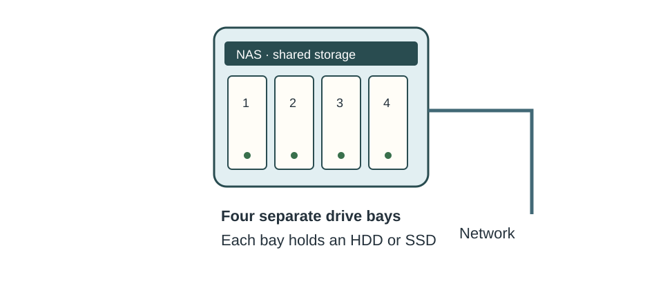
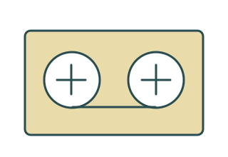

Backup and Data Recovery
What happens when important data is lost?
- Distinguish full, incremental and differential backups
- Explain where and how backups can be stored
- Describe how data is restored after failure
- Design and justify a suitable backup strategy
01 · Backup and data recovery
Live data is the working data
Live data is the current data people and applications use in everyday work. “Live” does not mean it must be on the internet.
In use now
College student records
Friday · 15:00Alex’s attendance: present
Teachers and reception read and update these records.
Kept for recovery
Thursday’s backup
Thursday · 23:00Friday’s attendance is not included.
A retained copy can recover an earlier usable state.
Working data keeps changing. A backup preserves data from a particular recovery point.
02 · Backup and data recovery
Friday, 15:40: the records stop working
College student-record service
Records corrupted
× Staff cannot use the serviceReception cannot look up details. Teachers cannot open their registers.
Potential recovery source
Thursday · 23:00
Backup availableCan we restore it, and what recent work will be missing?
The aim is to recover useful, checked data and get people working again.
03 · Backup and data recovery
One backup plan must cover different causes of loss
Accidental deletion
A staff member removes the wrong folder.
Need an earlier usable version.Equipment failure
The drive holding the live records fails.
Need a copy on separate storage.Corruption or ransomware
Data is damaged or locked by an attack.
Need a copy protected from the damage.Fire, flood or theft
The building or its equipment is lost.
Need a copy outside that incident.A backup that shares every risk with the live data may fail at the same time.
04 · Backup and data recovery
Backup prepares the copy. Recovery puts it to use.
Before failure · backup
- Live recordsData used by the college
- Copy and retainKeep a protected recovery point
- Backup storageSeparate from the working copy
Friday: live records become unusable
After failure · recovery
- Usable backupChoose a point before the damage
- Restore and checkRecover data and test access
- Working serviceStaff can resume their jobs
A backup job creating files is only part of the plan. Recovery must also work.
05 · Backup and data recovery
Backup, sync and RAID solve different problems
Our test: someone deletes students.csv. Which approach can bring back an earlier version?
Backup · recover earlier data
Live file
× DeletedRetained backup
✓ Earlier version
× DeletedRetained backup
✓ Earlier version
A protected, retained copy can be restored.
Sync · keep locations aligned
PC file
× DeletedSynced file
Deletion may follow
× DeletedSynced file
Deletion may follow
Check the service’s history and retention settings; sync alone is not enough.
RAID · tolerate some drive failures
Live array
File deletedRAID state
Deletion remains
File deletedRAID state
Deletion remains
Fault-tolerant RAID can help when a drive fails. It does not itself undo deletion.
For this lesson, the key question is whether a usable recovery copy survives the incident.
Backup procedures
What gets copied each time, and what will recovery need?
06 · Backup and data recovery
Three procedures, one shared example
Back up four college files each evening. A version number shows a saved change, not a file’s size.
MondayAll files start at v1
TuesdayAttendance → v2
WednesdayContacts → v2
ThursdayCourses → v2
Copy the entire selected set each time.
The reference point moves forward after each backup.
The reference point stays at Monday until another full.
Incremental and differential both need a full starting copy. Watch which earlier backup each method compares against.
07 · Backup and data recovery
Full backup: copy every selected file
Every evening, copy all four files, including those that have not changed.
MondayFull baseline
- studentsv1
- attendancev1
- coursesv1
- contactsv1
All four starting files
Tuesdayfull
- studentsv1
- attendancev2
- coursesv1
- contactsv1
All four files copied
Wednesdayfull
- studentsv1
- attendancev2
- coursesv1
- contactsv2
All four files copied
Thursdayfull
- studentsv1
- attendancev2
- coursesv2
- contactsv2
All four files copied
To recover Thursday’s selected files, use Thursday’s usable full backup on its own.
08 · Backup and data recovery
When is a full backup a good fit?
Advantage
Simple restore
One suitable full set contains all the selected files.
Trade-off
Repeated copying
Unchanged files are copied again, using more time and storage.
Suitable example
A small office folder
A modest set of documents can fit into a nightly backup window; straightforward recovery matters.
Thursday full→Thursday’s four files
A full backup may be practical for a small dataset but too slow to repeat frequently for a large one.
More explanation and examples
“Full” means all data selected for that backup, not necessarily every file on the device. Restoring an application may also require its software and settings. Actual copying and restore times depend on the software, amount of data, storage and transfer speed.
09 · Backup and data recovery
Incremental: compare with the previous backup
After Monday’s full backup, copy only files changed since the previous backup.
MondayFull baseline
- studentsv1
- attendancev1
- coursesv1
- contactsv1
All four starting files
Tuesdayincremental
- attendancev2
Only changes since Monday
Wednesdayincremental
- contactsv2
Only changes since Tuesday
Thursdayincremental
- coursesv2
Only changes since Wednesday
Reference moves:Monday → Tuesday → Wednesday → Thursday
Thursday’s incremental has the course change only. Tuesday’s attendance change lives in Tuesday’s set.
10 · Backup and data recovery
Incremental saves copying, but recovery needs the chain
Advantage
Small change sets
If little changes, each later job copies less data and can finish quickly.
Trade-off
More restore dependencies
Keep the full and every required incremental; a missing set can prevent complete recovery.
Suitable example
Busy student records
A large set with small, frequent updates can suit regular incrementals when the full chain restores quickly enough.
Monday full+Tuesday changes+Wednesday changes+Thursday changes
The benefit is less repeated copying. The cost is keeping and restoring the required sequence correctly.
11 · Backup and data recovery
Restore incrementals: build the files back up
Goal: recover Thursday’s state after the live files are lost. Each step applies one saved backup set.
Read this backup set
Monday · full
- studentsv1
- attendancev1
- coursesv1
- contactsv1
Files recovered so far
Monday state reached
- studentsv1
- attendancev1
- coursesv1
- contactsv1
Start with all four Monday files. We have not yet recovered Tuesday, Wednesday or Thursday’s changes.
Read this backup set
Tuesday · incremental
- attendancev2
Files recovered so far
Tuesday state reached
- studentsv1
- attendancev2
- coursesv1
- contactsv1
Replace attendance v1 with attendance v2. The other recovered files stay as they were.
Read this backup set
Wednesday · incremental
- contactsv2
Files recovered so far
Wednesday state reached
- studentsv1
- attendancev2
- coursesv1
- contactsv2
Replace contacts v1 with contacts v2. Keep the attendance update restored in the previous step.
Read this backup set
Thursday · incremental
- coursesv2
Files recovered so far
Thursday state complete
- studentsv1
- attendancev2
- coursesv2
- contactsv2
Replace courses v1 with courses v2. The four files now match Thursday’s state.
The changes are applied to the recovered files. An incremental set on its own is not a complete copy of all four files.
12 · Backup and data recovery
Differential: keep comparing with the full backup
Copy the files changed since Monday’s full backup, even if they were included yesterday.
MondayFull baseline
- studentsv1
- attendancev1
- coursesv1
- contactsv1
All four starting files
Tuesdaydifferential
- attendancev2
All changes since Monday
Wednesdaydifferential
- attendancev2
- contactsv2
All changes since Monday
Thursdaydifferential
- attendancev2
- contactsv2
- coursesv2
All changes since Monday
Reference stays:Monday full → Tuesday, Wednesday and Thursday
Thursday includes attendance, contacts AND courses: all files changed since Monday.
13 · Backup and data recovery
Differential trades more copying for fewer restore sets
Advantage
Shorter restore chain
For Thursday, use Monday’s full and Thursday’s differential.
Trade-off
Repeated changes
Attendance is copied again on Wednesday and Thursday. Later sets can grow until the next full.
Suitable example
Records needed back quickly
A college can accept larger evening jobs to avoid applying a long incremental chain during recovery.
Monday full+Thursday differential→Thursday state
Fewer sets can simplify recovery, but measured restore time still matters.
14 · Backup and data recovery
Why the earlier differentials are not needed
Thursday’s differential already includes the latest versions of every file changed since Monday.
1 · Restore the starting point
Monday full
- studentsv1
- attendancev1
- coursesv1
- contactsv1
2 · Apply accumulated changes
Thursday differential
- attendancev2
- contactsv2
- coursesv2
Recovered result
Thursday state
- studentsv1
- attendancev2
- coursesv2
- contactsv2
Tuesday differential · not neededWednesday differential · not needed
Incremental: every required link. Differential: the full baseline + the latest suitable differential.
15 · Backup and data recovery
Same changes. Different files copied.
Live files after today’s changes
Monday
- studentsv1
- attendancev1
- coursesv1
- contactsv1
Starting point: all four files are at version 1.
Full
Full starting copy
- studentsv1
- attendancev1
- coursesv1
- contactsv1
Incremental
Full starting copy
- studentsv1
- attendancev1
- coursesv1
- contactsv1
Differential
Full starting copy
- studentsv1
- attendancev1
- coursesv1
- contactsv1
Watch Wednesday and Thursday: incremental starts a new change set; differential keeps the changes since Monday.
More explanation and examples
Play advances one day at a time and stops at Thursday. Pause, step or restart at any time. Each tile represents a whole file, not a byte count or transfer-time estimate. The simplified example omits deleted files, compression and specialised backup features. Without JavaScript, the matching timelines above provide the complete comparison.
16 · Backup and data recovery
Full vs incremental vs differential
| Factor | Full | Incremental | Differential |
|---|---|---|---|
| Backup size | Usually largest | Usually smallest | Usually grows since the full |
| Backup time | Usually longest | Usually shortest | Often between the two |
| Restore | Selected full set | Full + required chain | Full + latest suitable differential |
| Main trade-off | More copying and storage | More restore dependencies | More repeated changes than incremental |
These are typical comparisons, not guarantees. Actual size and time depend on how much changes, the software, media and transfer speed.
Where backups are kept
A usable copy must survive the incident that damaged the live data.
17 · Backup and data recovery
Choose storage for the recovery job
The best destination depends on capacity, copying speed, restore speed, cost and protection.
External HDD / SSD
A local copy can be quick to restore.
Protect or disconnect it when appropriate; a permanently attached drive can share an attack.
Backup server / NAS
Automates backups from several devices.
A device in the same building still shares site risks; restrict access to the backup.
Tape
High capacity; removable media can be stored offline.
Finding and restoring specific files can take longer; transport and storage need managing.Remote / cloud backup
Can provide a geographically separate copy.
Budget for the service and test download and restore times.A destination is only useful if the selected data can be restored when needed.
18 · Backup and data recovery
Onsite: useful when the damage stays local
Incident: one college server drive fails. The separate backup device in the IT room still works.
College site
Separate
physical location↔
physical location↔
Second site
Good fitRestore a failed drive or deleted folder using fast local access.
Not sufficient aloneA fire, flood or theft affecting the site may take both copies.
Onsite means at the same site. It does not tell you whether a backup is connected, offline or protected from malware.
19 · Backup and data recovery
Offsite: recover when the building is lost
Incident: a flood makes the college server and onsite backup unavailable.
College site
Separate
physical location↔
physical location↔
Second site
What it solvesA geographically separate copy can survive this local disaster.
What it still needsA safe place to restore, transfer time, access controls and protection from attacks.
Distance protects against some physical incidents. It does not stop ransomware reaching a remotely connected backup.
More explanation and examples
Offsite can mean a second college location, protected removable media held elsewhere, or a provider’s remote service. It is not automatically cloud storage or third-party management. A local copy plus a protected offsite copy can cover different recovery needs; neither location label guarantees a usable backup.
20 · Backup and data recovery
Who does the work, and who remains responsible?
College owner · in either arrangement
Decide what to protect, the recovery targets and who may access it.Check that the agreed backup and restore process actually works.Option A · in-house operation
College IT team
- RunSchedule and monitor backups
- TestPractise recovery and fix failures
Benefit: direct control.
Cost: staff time, expertise and cover.
Option B · third-party operation
Specialist provider
- DeliverRun the agreed backup service
- ProveReport results and demonstrate recovery
Benefit: specialist support.
Cost: fees and dependence on the service.
Location and management are separate: college IT can manage an offsite copy, and a provider can manage an onsite device.
21 · Backup and data recovery
Personal data brings recovery responsibilities
Student names, contacts and attendance are personal data. Protecting them includes being able to recover access after an incident.
UK GDPR · security duties
Organisations must use measures appropriate to the risk, be able to restore personal-data availability and access in a timely way, and regularly assess whether their safeguards work.
- PlanChoose suitable backups and recovery arrangements
- TestCheck restoration and record the results
- ImproveFix weaknesses found by those checks
The law does not set one hourly or daily backup schedule for every organisation. See the ICO’s data-security guidance.
For a college, the effect on students helps determine how quickly records need to be recovered.
22 · Backup and data recovery
Compare schedules at the same failure time
Friday · 15:40 failure. Assume each scheduled backup finished successfully and captured a usable recovery point.
Once a day
Last copy: 00:00
15 h 40 min of changes at riskBenefit: fewer jobs and less copying load.
Drawback: much of today’s work may need re-entry or be lost.
Every hour
Last copy: 15:00
40 minutes of changes at riskBenefit: a more recent recovery point.
Drawback: more jobs, transfer activity and monitoring.
Both bars use the same 16-hour scale. They show recent changes at risk, not the time needed to restore.
Match frequency to how often data changes and how much recent work can be lost. An unchanged archive can use a different schedule.
More explanation and examples
A failed backup can make the loss window longer. Recovery depends on the last usable, completed recovery point, not merely the planned job time. Frequent copying is useful for changing records, but still needs capacity, protected versions and restore tests.
Data recovery
Choose a usable point, restore safely and prove the service works.
23 · Backup and data recovery
Recover from before the damage
At 15:40 the college discovers that corruption began at 15:20. A newer copy was taken at 15:30.
The newest copy is not the best recovery point if it contains the damage. Thursday’s copy also cannot recreate Friday’s later changes.
24 · Backup and data recovery
Recovery lab: bring the college records back
Work through the incident. Choose the recovery point and see when the service becomes safe to reopen.
- Identify and containFriday, 15:40: staff report unreadable records. Checks show corruption started at 15:20. Take the affected service out of use and prepare a clean recovery environment.
- Select a usable copyChoose a copy from before the damage. In this example, Thursday’s required backup sets are complete and have passed checks.
- RestoreThursday’s records are now in the recovery environment. The student service remains closed until the data and access controls have been checked.
- VerifyThe expected student records are present, sample class lists open correctly and staff permissions work. Friday’s later attendance changes are missing, as expected from this recovery point.
- Return serviceReopen the service, monitor it and record the missing Friday work. Re-enter missing attendance only from a reliable source, such as an authorised temporary register.
- 1Identify and contain
- 2Select a usable copy
- 3Restore
- 4Verify
- 5Return service
Recovered: Thursday’s records. Not recovered: Friday’s later attendance changes.
More explanation and examples
This is a teaching simulation, not a real recovery operation. A real plan also needs suitable hardware, software, credentials and documented responsibilities. Verification failures should send the team back to investigate; do not reopen a service simply because copying completed.
25 · Backup and data recovery
Restore what lets people work first
College example: only one restore can run at a time. Staff need attendance records now; old lesson videos can wait.
Archive first
Old videos · 4 hoursStudent service · 1 hour
Registers ready after 5 hoursCritical service first
Student service · 1 hourOld videos · 4 hours
Registers ready after 1 hourIllustrative timings. The amount restored is the same; the order changes how long essential work waits.
- Dependencies firstRestore required sign-in, software and settings
- Urgent serviceRestore and verify student records
- Lower-priority dataRecover the less urgent archive afterwards
Prioritise impact on people and system dependencies. The largest or easiest folder is not automatically the right starting point.
26 · Backup and data recovery
Recovery time is more than copying time
Even a recent backup can leave staff waiting. Time the complete route back to a working service.
30 minRetrieve the copy
+
45 minTransfer the data
+
30 minRestore the system
+
15 minCheck data and access
=
2 hoursBefore staff resume work
Illustrative timings for one recovery job, not a promise from a storage product.
How much recent work could be lost?
Depends on the last usable recovery point.
How long will people be unable to work?
Depends on the full recovery process.
Measure both. Frequent backups do not automatically produce fast recovery.
27 · Backup and data recovery
A completed backup job is not a completed restore test
Claim
“Backup completed”
Copying reported successUseful evidence that a job ran. It does not prove the recovered service works.
Evidence from a restore test
Restore into a safe environment
- Expected records and versions are present.
- Files open and the application runs.
- Authorised users can access the right data.
- Measured recovery time meets the need.
- DiscoverMissing set, damaged copy or unavailable key
- FixRepair the process and assign an owner
- RetestRecord evidence that the problem is resolved
Repeat tests at suitable intervals and after important changes. A past successful test is useful evidence, not a permanent guarantee.
28 · Backup and data recovery
Case study: GitLab’s backups were not ready
31 January 2017. GitLab.com, a service used by software teams, accidentally lost data from its main database.
Routine backups were failing
A software-version mismatch stopped the jobs. Failure emails were rejected, so the problem went unnoticed.
The gap was not discovered
GitLab reported no regular backup-procedure testing because nobody owned that responsibility.
An earlier snapshot was used
Recovery relied on a copy roughly six hours old. The service was unavailable for many hours and recent database changes were lost.
Lesson: assign responsibility, check failures reach someone, and prove that backups can be restored.
Source: GitLab’s incident report, 10 February 2017. Its code repositories were not lost; the data loss affected database records.
29 · Backup and data recovery
Different incidents need different protection
Compare a fault-tolerant RAID array with an independent, protected backup.
| Incident | What RAID can do | What the backup must provide |
|---|---|---|
| One drive fails | May keep service running Within the RAID level’s tolerance. | A recovery copy if the live array cannot be recovered. |
| File deleted | Deletion remains RAID preserves the changed live state. | An earlier retained version from before deletion. |
| Ransomware | Live data can still be encrypted | A usable copy protected from the attack. |
| Site destroyed | Array can be lost too | A usable copy outside the affected site. |
RAID supports availability during some hardware failures. Backups support recovery after data loss. A system may need both.
Designing a backup strategy
Choose a complete recovery plan that fits the organisation.
30 · Backup and data recovery
A strategy must join these decisions together
What and when?
Identify essential data, select a backup type and choose a suitable frequency.
Where and who?
Choose storage and locations, protect retained versions and assign responsibility.
How fast, and proven how?
Set priorities, document the restore steps and test the recovery time.
Success = usable data and services restored within the organisation’s needs.
A named device or a backup type alone is not a complete strategy.
31 · Backup and data recovery
Choose a backup strategy
1 · Choose a backup procedure
Situation
Active student records change throughout the day. The college also has a 1 TB archive with occasional additions.
Your task
Choose a procedure for the active records and match its main advantage. Then consider its limitation.
Step 1 of 4 · Backup type
2 · Choose a frequency
Situation
The college can accept at most one hour of lost attendance changes. Records change throughout the working day.
Your task
Which schedule best meets this limit, assuming jobs complete on time? Match it to the reason.
Step 2 of 4 · Student-record frequency
3 · Choose locations
Situation
Staff need quick local recovery. A fire at the college must not destroy the only recovery copy.
Your task
Which arrangement addresses both needs? Match it to the reason.
Step 3 of 4 · Backup location
4 · Assign operation
Situation
The college has limited IT staff. Backups must be monitored, protected and regularly tested.
Your task
Choose who could operate the backups and match a reason. Read the condition that would make it workable.
Step 4 of 4 · Who manages it?
5 · Bring the plan together
Situation
Active records change all day; the archive changes occasionally. Aim for no more than one hour of lost attendance and return the essential service within two hours.
Your task
Use your choices to justify a plan. Include local and site-loss risks, responsibilities, recovery order and evidence from a test.
What should your recovery plan include?
Your written plan saves in this browser.
Compare with an example judgement
Scheduled full backups plus frequent incremental backups could reduce copying for active records, provided the chain restores within the college’s downtime limit. A slower archive schedule can protect new additions without repeatedly copying unchanged resources. Local and protected offsite copies cover different risks; specialist help may suit limited staff, if cost, access and recovery arrangements are acceptable.
Prioritise critical records and their dependencies. Identify a usable version, restore into a safe environment, check completeness and permissions, then return service. Test the whole process and account for attendance changes since the last usable backup. A differential or full strategy can also be justified if measured costs and recovery performance fit.
32 · Backup and data recovery
Explain why your backup plan fits
For an evaluation question, link the backup choice to the organisation’s needs, then weigh a limitation.
- Choice
Use frequent incremental backups for changing records…
- Impact
…so small changes can be copied without repeatedly copying everything…
- Application
…helping protect the college’s attendance updates throughout the day.
Trade-off
Recovery needs the full and every required incremental. A long or damaged chain could delay the return of registers.
Weigh and judgeThis is suitable only if the college keeps the required sets and tests that essential records return within its two-hour target. If the chain is too slow, a differential or full approach may fit better.
This is one developed example, not a complete extended answer. Consider the other decisions the question asks about.
Practice
Check your understanding and apply the ideas to new scenarios.
33 · Backup and data recovery
Common exam mistakes
“RAID is a backup”
Reveal correction
Resilience does not supply an independent historical copy.
“Cloud sync is a complete strategy”
Reveal correction
Deletion/corruption may propagate. Check recoverable versions and their protection.
“Incremental means since the full”
Reveal correction
Incremental means since the previous backup. Differential means since the last full.
“Restore every differential”
Reveal correction
Normally restore the full plus the latest suitable differential.
“A backup exists, so recovery is solved”
Reveal correction
It may fail to restore, omit needed data or take too long.
“Offsite means third-party”
Reveal correction
Location and management are separate choices.
34 · Backup and data recovery
Check your understanding
Answer all 14 questions, then check your score. Aim for 10 correct. Your answers and best score save in this browser.
35 · Backup and data recovery
Exam-style practice
Apply your reasoning to the organisation, then weigh the relevant trade-offs. These are practice questions, not an official mark scheme.
Draft answers save automatically in this browser.
Question 1
Explain two reasons why an organisation should keep backups.
Show answer guide
- Accidental deletion/overwrite can remove earlier useful records; a separate backup version allows them to be restored.
- A drive or site failure may make live data unavailable; a usable separate copy helps restore work and reduce disruption.
- Develop two distinct cause → recovery benefit links for four marks. Other applied causes, such as corruption or malware, can be used.
Question 2
Explain the difference between incremental and differential backups.
Show answer guide
- Incremental stores changes since the previous backup; in the college example Wednesday contains the contacts change, while Tuesday’s attendance change remains in the Tuesday set.
- Differential stores changes since the last full; Wednesday includes both attendance and contacts changes.
- Link this difference to full + required incremental chain versus full + latest suitable differential. Do not give two definitions without explaining the difference.
Question 3
Discuss the advantages and disadvantages of storing backups offsite.
Show answer guide
- A copy outside the college can survive an incident confined to its building, allowing recovery after local equipment is lost.
- Retrieval may depend on download speed or transporting media, delaying access to urgent student records.
- Extra storage/service/logistics cost and protection of sensitive data must be considered. Offsite is not necessarily outsourced.
- Weigh location protection against recovery needs. Local plus offsite copies may balance speed and risk if resources allow.
Question 4
Explain why an organisation should test its data-recovery procedures.
Show answer guide
- Restoring representative records can reveal corrupt or missing files and incomplete backup scope before an emergency.
- Checking versions, permissions and required credentials shows whether staff can actually use restored information.
- Timing the complete process can reveal that the chosen media, transfer or backup chain cannot meet the college’s downtime need.
- Develop three problem → organisational effect → test benefit links. Document fixes and retest; successful copying alone is insufficient.
Question 5
Analyse factors a college should consider when deciding how frequently to back up student records.
Show answer guide
- Attendance and contacts can change during the day, so daily backups may leave significant re-entry or lost updates after an afternoon failure.
- Explain acceptable recent loss in terms of student support and staff work; tighter tolerance may justify hourly copies.
- Frequent backups use storage, bandwidth, processing time and support. Change-based backups can reduce repeated copying, with restore dependencies to manage.
- Consider the backup window, monitoring of failed jobs and whether a recent usable copy is actually available.
- Distinguish frequency from recovery speed. Reach a justified balance; the largely unchanged archive may use a different schedule.
Question 6
A college stores student records, teaching resources and archived reports on a central system. Evaluate an appropriate backup and recovery strategy.
Show answer guide
- Prioritise critical student records and required services; justify why some archive material can wait, while recognising urgent teaching dependencies.
- Propose full backups with an appropriate incremental/differential schedule or justify full-only copying. Explain backup workload versus restore complexity.
- Set frequency from change rate and acceptable recent loss; use a different schedule for largely unchanged archives and new additions.
- Choose media/location to balance quick local recovery with protected copies away from the main site. Explain same-site and malware risks.
- Weigh in-house expertise against third-party support, recurring costs and service/restore arrangements. Outsourcing does not remove oversight.
- Describe identifying damage, choosing a usable version and required sets, restoring, checking data/access and returning service. Test the recovery time and document failures.
- For higher marks, connect these choices and reach a conditional judgement based on college needs, cost and measured recovery performance. Simple feature lists are insufficient.